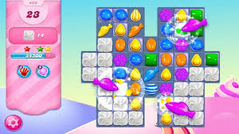
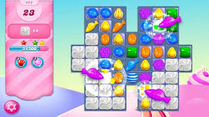

Top 10 2026 (janeiro a fevereiro)
- 1º Subway surfers
- 2° Candy crush saga
- 3° Free Fire
- 4° Roblox
- 5° 8 ball pool
- 6° Ludo King
- 7° PUBG MOBILE
- 8° My Talking Tom
- 9° Temple Run 2
- 10° Hill Climb Racing
Top 10 2025
- 1° Block Blast
- 2° Roblox
- 3° Garena Free Fire
- 4° Subway Surfers
- 5° Pizza Ready!
- 6° Ludo King
- 7° Vita Mahjong
- 8° My Talking Tom 2
- 9° Hole.io
- 10° PUBG MOBILE
2026
primeiro lugar
subway surfers
primeiro lugar
subway surfers
um jogo com mais de 4,5 bilhão de downloads, criado em 2012 pela Kiloo e Sybo Games. O jogo é uma corrida infinita, onde você pode comprar personagens e habilidades. começa com seu(a) personagem pixando um trem, e sendo visto por um policial.Logo a corrida começa e você tem que pegar moedas e cumprir missões sem bater nos trens e obstàculos que você irá encontrar no caminho. O jogo se passa em cidades diferentes, e contém atualizações frequentemente.
Segundo lugar
Candy crush saga
um jogo com mais de 3 bilhão de downloads, criado em 2012 pela king. O objetivo do jogo é alinhar os doces coloridos para ganhar pontuação, e cumprir as mições. o jogo tem milhares de fases. Jogadores têm vidas limitadas que se regeneram a cada 30 minutos. O progresso é sincronizado através da conta do Facebook, permitindo jogar no celular ou PC.
 

Terceiro lugar
free fire
Um jogo com mais de 1,3 bilhão de downloads, criado em 2017 pela garena. É um jogo de battle Royale mobile gratuito, onde tem vários modos de jogo. O modo clássico, que é o principal, 50 jogadores caem de paraquedas em uma ilha e lutam para ser o último sobrevivente em partidas rápidas de 10 minutos. Assim que o jogador(a) cai no solo, deve se equipar com os equipamentos e recursos de sobrevivência que vão ser encontrados destribuidos no mapa, dentro de casas, dentro de locais específicos e etc.
Quarto lugar
Roblox
Um jogo com mais de com mais de 383 milhões de downloads.A Roblox foi criada em 2006, pela Roblox Corporation, uma desenvolvedora americana fundada em 2004 por David Baszucki e Erik Cassel. O jogo é uma plataforma com vários outros jogos online, tendo diversas variedades de jogos, sendo parkour, escapar de lugares, mapas de upar (envolve focar em missões principais, usar códigos de 2x XP, farmar bosses em grupo e utilizar itens que aumentam a experiência). O jogo tem chat nos mapas onde você pode conversar com amigos(a), e voc~e pode mudar e vestir seu personagem.
Quinto lugar
8 ball pool
Um jogo com mais de mais de 460 milhões de downloads. O 8 Ball Pool, foi criado em 2008,desenvolvido e publicado pela Miniclip. um dos jogos de sinuca online mais populares do mundo, permitindo partidas em tempo real com regras baseadas no jogo de sinuca clássico de 8 bolas.

Sexto lugar
Ludo King
um jogo com mais de 1,75 bilhão de downloads,foi criado em 2016, desenvolvido pela Gametion, está disponível para Android, iOS e Windows, oferecendo modos online e offline. Um jogo de tabuleiro onde quatro pessoas escolhem sua cor, quem chegar no centro primeiro ganha.


Setimo lugar
Vita Mahjong
Um jogo com mais de mais de 178 mil downloads, criado em 2024 pela Vita Studio, focado em oferecer uma experiência relaxante, clássica e acessível, especialmente popular entre o público mais maduro. Ele é um jogo gratuito, com opções de personalização, que foca na estimulação cerebral. Um jogo de combinar os pares e cumprir missões. O jogo é projetado para idosos, oferecendo um design com foco em acessibilidade e estímulo mental.
Oitavo lugar
My Talking Tom
Um jogo com mais de mais de 22 milhões de downloads, criado em pela Outfit7 em 2010.É uma das franquias de bichinhos virtuais mais populares do mundo, objetivo é adotar o Tom, alimentá-lo, levá-lo ao banheiro, colocá-lo para dormir e brincar com ele para mantê-lo feliz.O Tom repete tudo o que o usuário diz com uma voz aguda (recurso "talking") e reage de formas engraçadas (ou curiosas) ao ser cutucado, acariciado ou ter o rabo puxado.É possível vestir o Tom com roupas, mudar a cor de sua pelagem e decorar sua casa com móveis colecionáveis.Os aplicativos incluem vários mini-games de quebra-cabeças, ação e aventura.
Nono lugar
Temple Run
Um jogo com mais de 1 bilhão de downloads, criado em 2011, pela Imangi Studios. O objetivo é guiar um explorador que roubou um ídolo amaldiçoado, fugindo de macacos demoníacos por cenários perigosos. o jogador foge de demônios após roubar um ídolo de um templo, desviando de obstáculos e coletando moedas em um cenário de selva. O sucesso do jogo gerou sequências e spin-offs, tornando-se um marco nos jogos mobile, com a jogabilidade focada em reflexos rápidos para escapar o máximo possível. Um jogo de corrida infinita.
Decimo lugar
Hill Climb Racing
Um jogo com mais de 2,5 bilhões de downloads, um dos jogos mais baixados do mundo, criado em 2012, pela Fingersoft. O objetivo do jogo é dirigir o mais longe possível em cenários montanhosos. O jogo é focado em bater recordes de distância, não havendo um final definitivo (modo infinito).É crucial coletar combustível para evitar o esgotamento e a parada do veículo.As moedas que são coletadas são Usadas para melhorar motor, suspensão, pneus e 4x4, facilitando a superação de terrenos íngremes. Tambem podendo utilizar os pedais de freio e acelerador para equilibrar o carro no ar, realizar manobras e ganhar bônus de moedas. Você consegue liberar novas fases (como campo, deserto, lua) e veículos (moto, tanque, trator) ao atingir distâncias específicas.
Esses foram os dez jogos mais instalados na play store do começo de 2026.